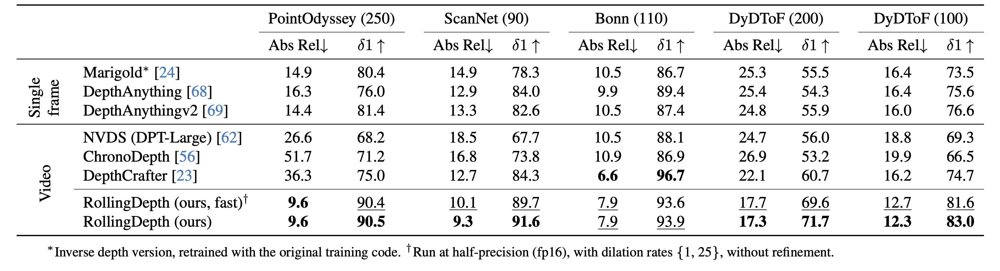

Video depth estimation lifts monocular video clips to 3D by inferring dense depth at every frame. Recent advances in single-image depth estimation, brought about by the rise of large foundation models and the use of synthetic training data, have fueled a renewed interest in video depth. However, naively applying a single-image depth estimator to every frame of a video disregards temporal continuity, which not only leads to flickering but may also break when camera motion causes sudden changes in depth range. An obvious and principled solution would be to build on top of video foundation models, but these come with their own limitations; including expensive training and inference, imperfect 3D consistency, and stitching routines for the fixed-length (short) outputs. We take a step back and demonstrate how to turn a single-image latent diffusion model (LDM) into a state-of-the-art video depth estimator. Our model, which we call RollingDepth, has two main ingredients: (i) a multi-frame depth estimator that is derived from a single-image LDM and maps very short video snippets (typically frame triplets) to depth snippets. (ii) a robust, optimization-based registration algorithm that optimally assembles depth snippets sampled at various different frame rates back into a consistent video. RollingDepth is able to efficiently handle long videos with hundreds of frames and delivers more accurate depth videos than both dedicated video depth estimators and high-performing single-frame models.
Overview of the RollingDepth Inference Pipeline. Given a video sequence $\mathbf{x}$, we construct $N_T$ overlapping snippets using a dilated rolling kernel with varying dilation rates, and perform 1-step inference to obtain initial depth snippets k k k . Next, depth co-alignment optimizes $N_T$ pairs of scale and shift values to achieve globally consistent depth throughout the full video. An optional refinement step further enhances details by applying additional, snippet-based denoising steps.
Quantitative comparison of RollingDepth with baseline methods on zero-shot benchmarks. Bold numbers are the best, underscored second best, numbers in the bracket after each dataset denote video sequence length. RollingDepth demonstrates superior performance across both short and long video sequences, despite being an image-based model.
Refer to the pdf paper linked above for more details on qualitative, quantitative, and ablation studies.
@InProceedings{ke2024rollingdepth,
title={Video Depth without Video Models},
author={Bingxin Ke and Dominik Narnhofer and Shengyu Huang and Lei Ke and Torben Peters and Katerina Fragkiadaki and Anton Obukhov and Konrad Schindler},
booktitle = {Proceedings of the IEEE/CVF Conference on Computer Vision and Pattern Recognition (CVPR)},
year={2025}
}